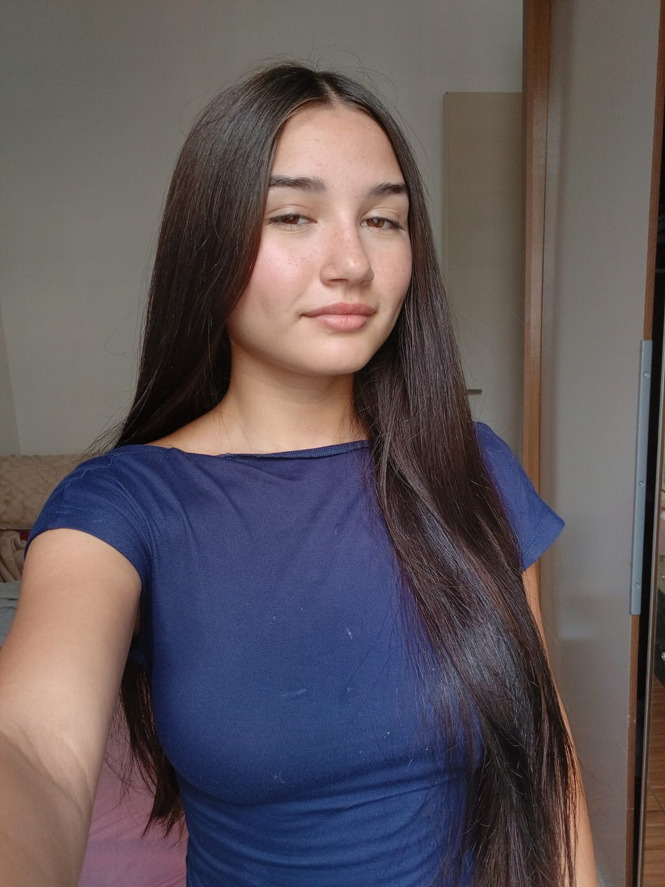

Desenvolvedora Web em formação, focada em aprender na prática e evoluir todos os dias.

Tenho 16 anos e estou no 2º ano do Ensino Médio no Instituto Estadual Mariz e Barros. Sou apaixonada por tecnologia e descobri na programação um jeito de tirar ideias do papel. Criei esse portfólio pra mostrar minha evolução, registrar meus projetos e dar o primeiro passo rumo ao meu estágio na área de desenvolvimento.
Criei uma página pessoal do zero com HTML e CSS, no curso de Programação Web da IOS.
Criei este portfólio para dar meus primeiros passos no mercado de trabalho como desenvolvedor web. Ainda estou no início, mas tenho muita vontade de aprender e crescer.
Meu objetivo é conquistar minha primeira oportunidade e ganhar experiência na prática.
Telefone: 51 992142121
Email: yasminalmeron41@gmail.com